SONY （ソニー）
日本を代表するオーディオマーカー。フィリップスとともにコンパクト・ディスクの規格を提唱し、またいわゆる「ウォークマン」により、ポータブル機器による音楽鑑賞を定着させた。変換器（トランデューサー）メーカーとしては、マイクやヘッドフォンで評価が高い。
本サイトの本体であるヘッドフォンや規格作成にかかわったCDプレーヤー、伝統的なテープレコーダーなどと比較すると、アナログディスク関連はやや熱心さがない印象があるが、それでも総合・家電系のブランドよりは充実した製品ラインナップを持っていた。
SONY （ソニー）の製品を以下のように分類する。（この分類は個人的な意見で、メーカーの分類ではありません）
�T.カートリッジ
管理人の手元にある資料で最古のものは高出力型MC型カートリッジVC-1500Eであるが、本格的な展開はMM型のXL-15、35、45あたりからか？1970年代後半のシェル一体型カートリッジの流行時に本格的なMC型に進出したのは、他社と同様の流れであった。
1.MM型カートリッジ
1970年代中盤の主力XL-15、35、45は比較的オーソドックスな製品。シェル一体型の流行期の製品がXL-40など。1980年代はMC型と歩調を合わせるように、コンパクトな製品が主流となった。
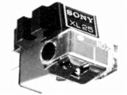 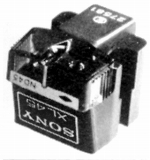
XL-15 XL-25 XL-35 XL-45 XL-45E
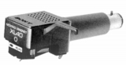
(XL-40)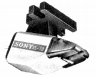
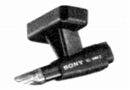
（XL-MM2)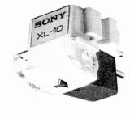
2.MC型カートリッジ
(1)通常の製品
空芯8の字コイルが特徴。前半の製品は比較的ガッシリとしたボディの製品だった。最高級は針先一体型ダイヤモンドカンチレバーのXL-88D。後半のXL-MCシリーズでは発電系をコンパクトにまとめ、ユーザーによるユニット交換を実現した。
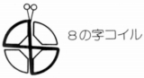
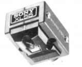
（XL-55)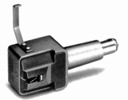
（XL-55Pro)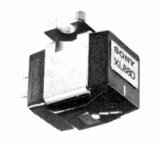
（XL-88D)XL-44L XL-55�U XL-55Pro�U XL-88 XL-88D
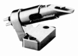
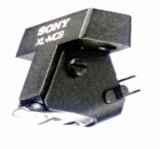
（左 XL-MC5 右 XL-MC9)XL-MC1 XL-MC3 XL-MC5 XL-MC7 XL-MC9
(2)高出力型
XL型番以前の高出力型MC型がVC-1500EとVＳ-8E。XL-MC10はXL-MC5などと同じデザインの高出力型。
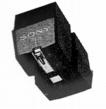
(VS-8E)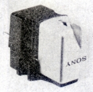
(VC-1500E)(3)モノラル用
1980年代中盤に1機種が確認できた。
3.T4P規格カートリッジ
ソニーも少数のT4P規格カートリッジを販売していた。MM型のXL-300Gと、高出力MC型のXL-MC104P。どちらも入門機クラスだった。
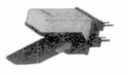
(XL-MC104P)
�U.昇圧トランス・ヘッドアンプ
MC型の昇圧手段としてはヘッドアンプでスタートした。MC型カートリッジXL-55と同時にデビューしたのがHA-55で、廉価版がHA-50。1980年代に入りトランスが主流となる。最高級機XL-88Dにあわせ発売された高級機がHA-T1で、それ以外の機種は手軽なピンプラグ型の製品だった。
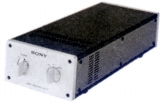
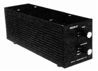
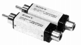
（左 HA-55 中央 HA-T1 右 HA-T10)（昇圧トランス) HA-T1 HA-T10 HA-T30 HA-T50
�V.トーンアーム
他社よりも早く、1980年代初頭に撤退した。
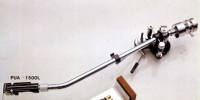
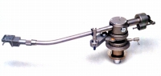
（左 PUA-1500L 右 PUA-9)
�W.その他
デザインには定評のあるメーカーであり、シェルの種類は比較的豊富だった。型番は「SH」。その他にはクリーナー4点が確認できた。
�@ヘッドシェル
�Aクリーナー